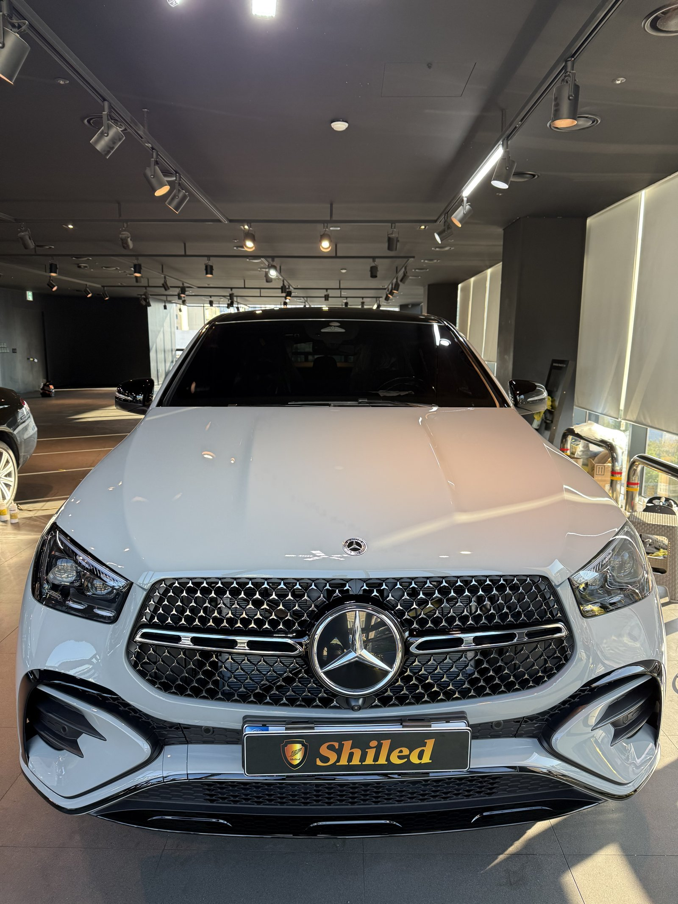
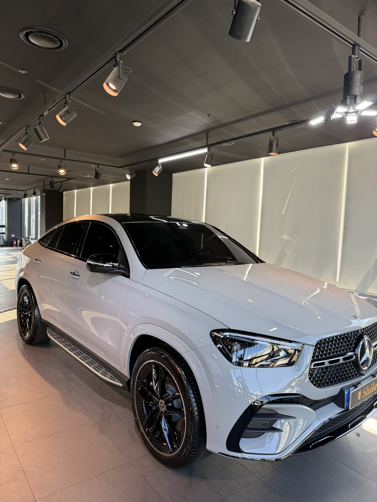
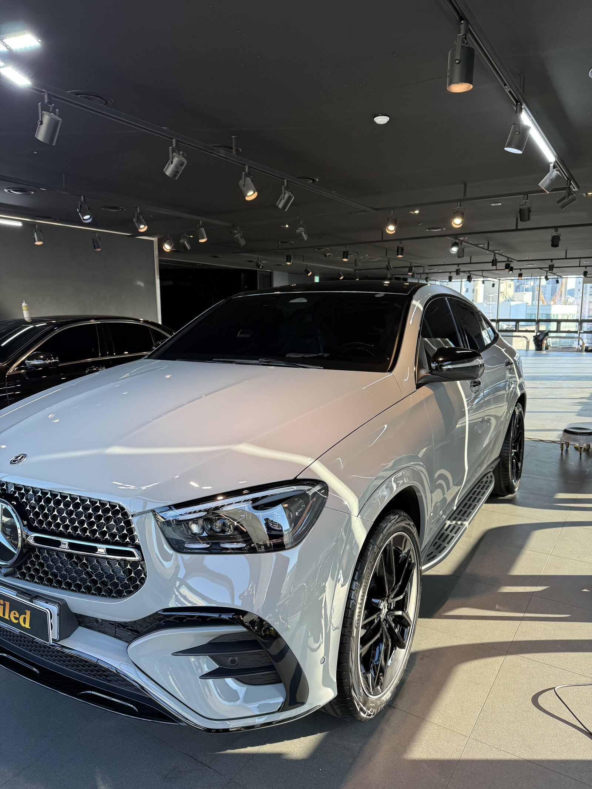
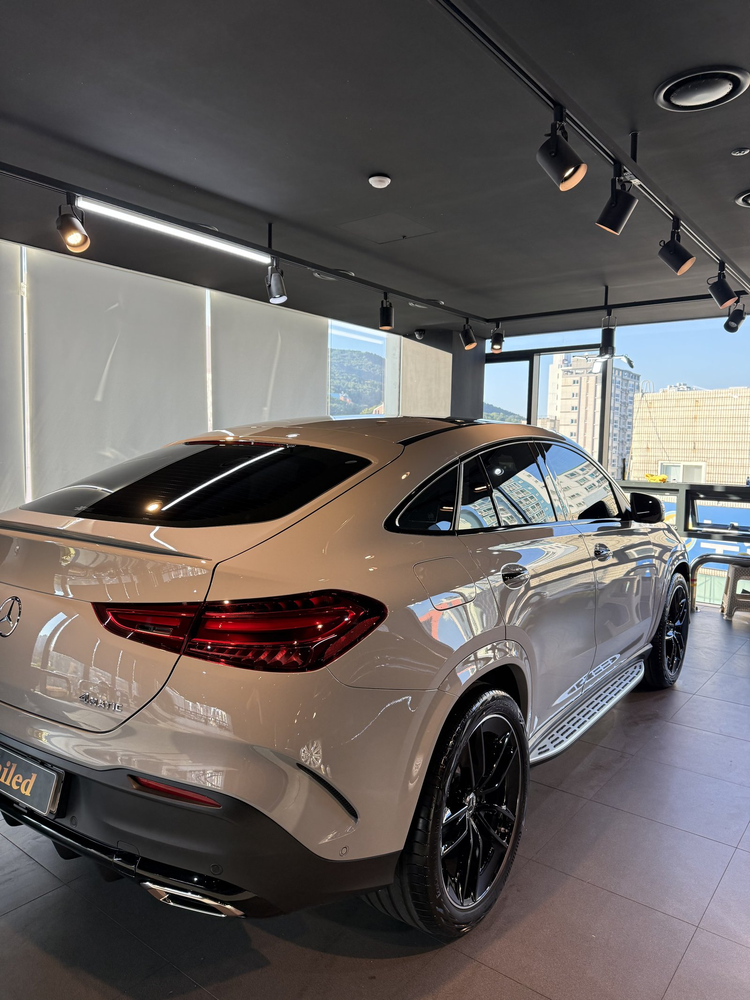
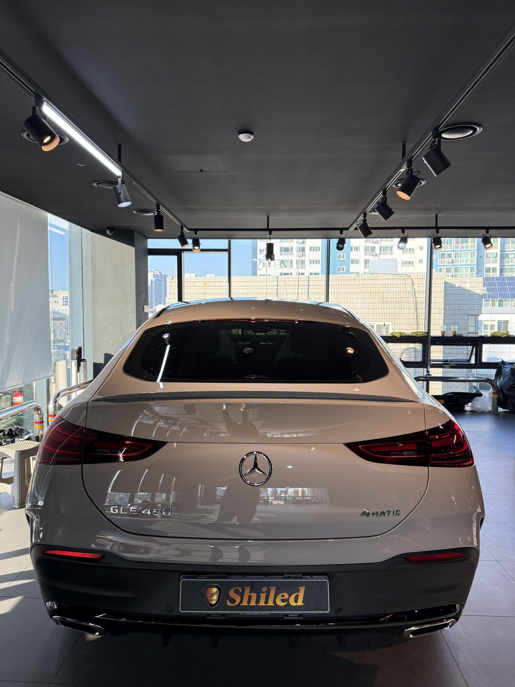
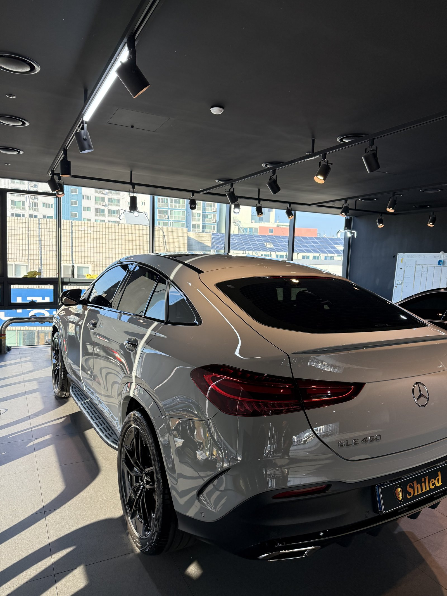
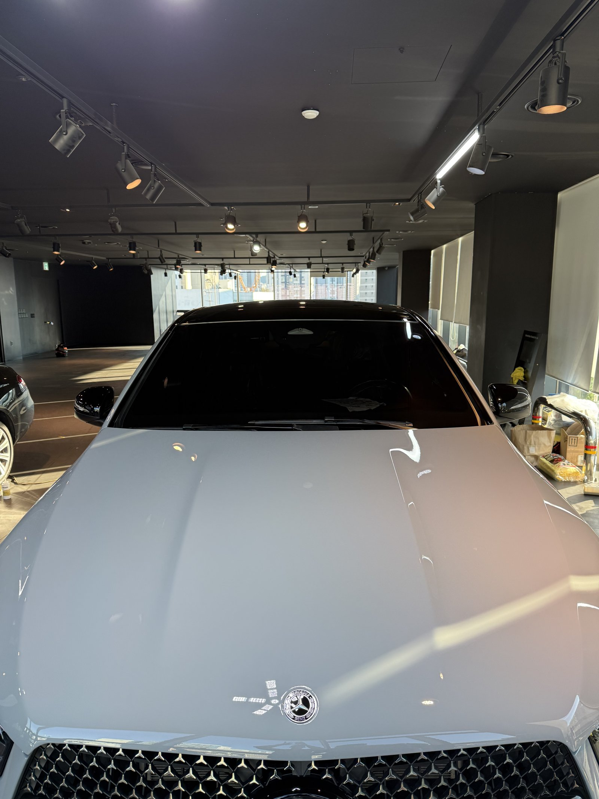
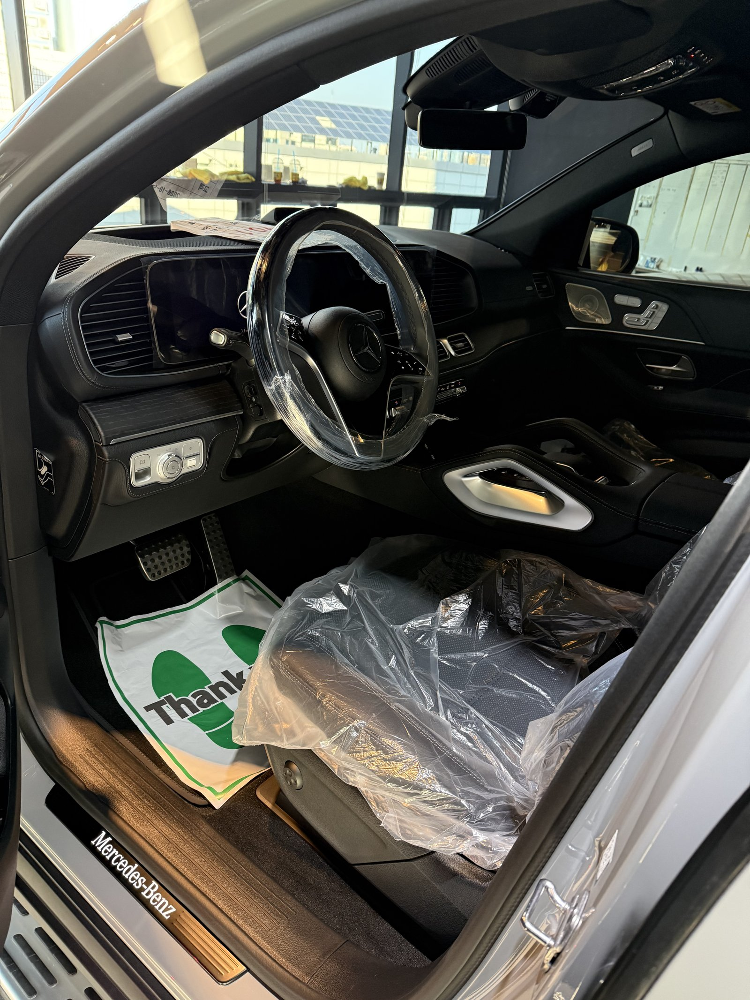
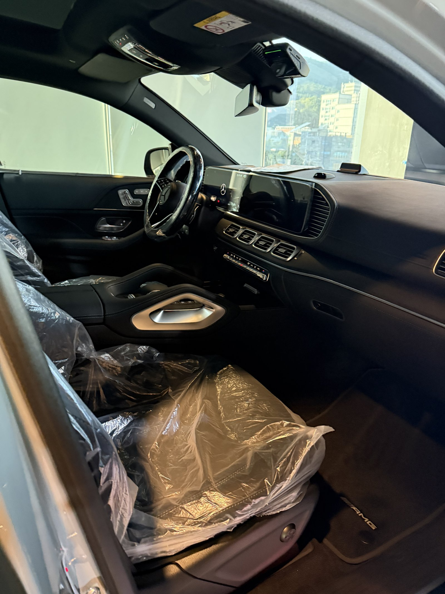
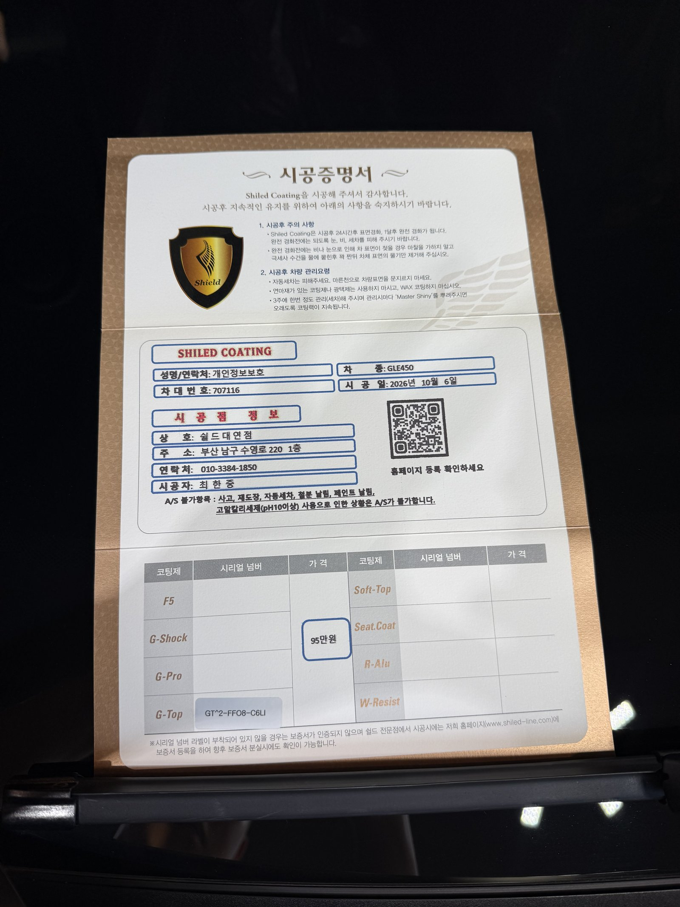

벤츠 GLE450 AMG 쿠페, 알파인그레이 신차입니다.
밝은 회색 계열이라 조명에 따라 은색에 가깝게도, 흰색에 가깝게도 보이는 색입니다.
이 차는 G-TOP 단독으로 진행했습니다.
부산 유리막코팅 작업의 GLE450 쿠페 기록입니다.

쿠페 SUV는 어디가 먼저 더러워지나요?
뒤쪽 경사면입니다.
쿠페형은 루프가 트렁크까지 길게 떨어지는 구조입니다.
달릴 때 뒤로 말려 들어오는 공기가 먼지와 물방울을 그 경사면에 앉힙니다.
그래서 일반 SUV보다 리어 유리와 트렁크 위쪽 오염이 빨리 쌓입니다.


알파인그레이에 G-TOP을 고른 이유
G-TOP은 발수와 방오에 특화된 코팅입니다.
밝은 회색은 검정처럼 잔기스가 도드라지는 색이 아닙니다.
대신 물때와 도로 먼지 자국이 회색 면 위에 얼룩으로 남기 쉽습니다.
그래서 색감보다 오염이 덜 붙고 잘 씻겨 나가는 쪽을 우선했습니다.
이번 부산 유리막코팅도 대표가 직접 개발·제조한 G-TOP으로 마무리했습니다.


기술자의 팁
쿠페형은 리어 와이퍼가 없거나 짧게 닿는 경우가 많습니다. 세차 후 리어 유리와 트렁크 위쪽 물기는 따로 한 번 더 닦아 주시면 물 자국이 훨씬 덜 남습니다.


블랙 실내는 출고 전 그대로 지킵니다
실내는 보호 비닐이 씌워진 신차 상태 그대로입니다.
외부 코팅을 마친 뒤 인도 전에 대표가 직접 최종 상태를 확인합니다.


시공증명서를 함께 드립니다
모든 시공 차량에 시공증명서를 드립니다.
차종·시공일·코팅제 시리얼 번호가 적혀 있고, 홈페이지에 등록해 보증을 받으실 수 있습니다. 이 차는 G-TOP으로 기록돼 있습니다.

차종·시공일·코팅제 시리얼이 기재된 시공증명서
자주 묻는 질문
Q. 밝은 회색 신차에는 어떤 코팅이 맞나요?
A. 이 차는 G-TOP으로 진행했습니다. 밝은 회색은 잔기스보다 물때·먼지 얼룩이 먼저 눈에 띄는 색이라 발수·방오에 특화된 G-TOP이 관리하기 편합니다.
Q. 쿠페 SUV는 어디를 더 신경 써야 하나요?
A. 경사진 리어 유리와 트렁크 위쪽입니다. 주행 중 뒤로 말려 들어오는 공기 때문에 먼지와 물방울이 그 부분에 먼저 쌓입니다.
Q. 왜 출고 전에 코팅하나요?
A. 도장면이 가장 깨끗할 때 올린 코팅이 가장 오래갑니다. 운행과 세차로 잔기스가 생기기 전에 입혀두는 것이 핵심입니다.
Q. 코팅 후 세차는 언제부터 하나요?
A. 코팅이 자리 잡을 시간이 필요하므로 시공 직후 강한 세차는 피하는 것이 좋습니다. 정확한 시점은 인도할 때 안내해 드립니다.
Q. 쉴드광택 위치와 예약은 어떻게 하나요?
A. 부산 남구 유엔로220 1F 쉴드광택입니다. 예약·상담은 010-3384-1850, 대표 최한중이 직접 상담하고 책임 시공합니다.
새 차일수록 시작점이 다릅니다. 가장 깨끗할 때 입혀두십시오.
제품을 직접 만드는 사람이 직접 시공합니다.
부산에서 신차 유리막코팅을 고민 중이시면 편하게 연락 주십시오.
어떤 차를 타냐보다 어떻게 타냐가 중요합니다~!
시공 중에는 전화를 받지 못할 때가 많습니다.
카카오톡으로 차종과 원하시는 시공을 남겨주시면 확인 후 답변드립니다.
쉴드광택 · 부산 남구 유엔로220 1F · 대표 최한중